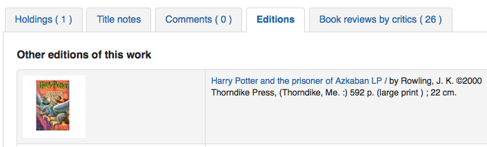

強化內容
到那裡： 更多 > 管理 > 整體系統偏好 > 強化內容
重要
注意外部資料來源的服務條款，確認在正確的授權範圍內使用它們。
注意
不能使用多個封面服務 (包括在地服務)。若設定多個服務將形成重複封面。只能選一個封面來源。
全部
FRBRizeEditions
預設值：不顯示
詢問：在館員介面 ___ 館藏的其他版本
值:
不顯示
顯示

說明：
Using the rules set forth in the Functional Requirements for Bibliographic records, this option, when enabled, pulls all editions of the same title available in your collection regardless of material type. Items will appear under an ‘Editions’ tab on the detail page for the title in question.. According to Libraries Unlimited’s Online Dictionary for Library and Information Science (http://lu.com/odlis/), FRBRizing the catalog involves collating MARC records of similar materials. FRBRization brings together entities (sets of Works, Expressions, or Manifestations), rather than just sets of Items. It can aid patrons in selecting related items, expressions, and manifestations that will serve their needs. When it is set to “Show”, the OPAC will query one or more ISBN web services for associated ISBNs and display an Editions tab on the details pages. Once this preference is enabled, the library must select one of the ISBN options (such as ThingISBN). This option is only for the Staff Client - the OPACFRBRizeEditions option must be enabled to have the Editions tab appear on the OPAC.
重要
Requires that you turn on one or more of the ISBN services (such as ThingISBN).
OPACFRBRizeEditions
預設值：不顯示
詢問：在 OPAC ___ 館藏的其他版本。
說明：
Using the rules set forth in the Functional Requirements for Bibliographic records, this option, when enabled, pulls all editions of the same title available in your collection regardless of material type. Items will appear under an ‘Editions’ tab on the detail page for the title in question.. According to Libraries Unlimited’s Online Dictionary for Library and Information Science (http://lu.com/odlis/), FRBRizing the catalog involves collating MARC records of similar materials. FRBRization brings together entities (sets of Works, Expressions, or Manifestations), rather than just sets of Items. It can aid patrons in selecting related items, expressions, and manifestations that will serve their needs. When it is set to “Show”, the OPAC will query one or more ISBN web services for associated ISBNs and display an Editions tab on the details pages. Once this preference is enabled, the library must select one of the ISBN options (such as ThingISBN). This option is only for the OPAC - the FRBRizeEditions option must be turned “On” to have the Editions tab appear on the Staff Client.
值:
不顯示
顯示

此偏好抓出館藏內題名相同的所有類型的各種版本。館藏將顯示在詳情頁面的 ‘版本’ 分頁。
重要
Requires that you turn on one or more of the ISBN services (such as ThingISBN).
Amazon
AmazonAssocTag
詢問：填入亞馬遜書店的推廣帳號 ___。
注意
讀者從圖書館網頁點選進入亞馬遜書店購物，圖書館就能收到介紹費。
說明：
向亞馬遜書店取得推廣帳號後讀者就可以點選圖書館網頁裡連結進入亞馬遜書店購物讓圖書館收到介紹費。詳情見亞馬遜書店夥伴計畫網站 https://affiliate-program.amazon.com/。然而，取得推廣帳號前，必須先申請亞馬遜書店網頁服務帳號 (Amazon Web Services, AWS) http://aws.amazon.com。才能登入前述的夥伴計畫網站，取得推廣帳號。
AmazonCoverImages
預設值：不顯示
詢問：___ 來自亞馬遜書店的封面資訊於館員介面的搜尋結果與館藏詳情。
值:
不顯示
顯示
說明：
此偏好控制亞馬遜書店的封面是否顯示在館員介面。根據館藏的 MARC 紀錄的第一個 ISBN 向亞馬遜書店的資料庫擷取封面。亞馬遜書店提供此免費服務。若此偏好設定為 “顯示”，封面顯示在館員介面裡，若此偏好設定 “不顯示”，則不會顯示封面。最後，選用亞馬遜書店的封面後，必須關閉其他來源的封面資料。否則，會干擾此偏好的運作。
AmazonLocale
預設值：美國
詢問：從 ___ 網站取用亞馬遜資訊。
值:
美國
英國
加拿大
法國
德國
印度語系
日文
OPACAmazonCoverImages
預設值：不顯示
詢問：___ 來自亞馬遜書店的封面資訊於 OPAC 的搜尋結果與館藏詳情。
值:
不顯示
顯示
說明：
此偏好控制是否在 OPAC 顯示亞馬遜書店的封面。取自亞馬遜書店的封面，係根據館藏 MARC 記錄的第一個 ISBN 向亞馬遜書店的資料庫擷取。此服務為免費。若此偏好設定為 “顯示”，封面顯示在 OPAC 裡，若此偏好設定 “不顯示”，則不會顯示封面。最後，選用亞馬遜書店的封面後，必須關閉其他來源的封面資料。若沒有關閉，會干擾 AmazonCoverImages 偏好的運作。
Babelthèque
Babelthèque
預設值：不要
詢問: ___ 加入來自法國文學圖書館的 (書評與引文) 資訊於 OPAC。
說明：
設定此偏好後，在 OPAC 顯示法國國家圖書館分頁，讀者可近用該館的標籤、評論與其他資訊。這些資訊都來自法文的 Babelio.com，類似的英文資料在 LibraryThing for Libraries。詳情見其網站，http://www.babeltheque.com。使用前必須先登錄入 http://www.babeltheque.com。此資訊只以法文顯示。
值:
做

不要
Babeltheque_url_js
詢問：___ 設定供 Babeltheque javascript 檔案使用的網址 (如： http://www.babeltheque.com/bw_XX.js)
Babeltheque_url_update
詢問：___ 定期更新設定 Babelthèque 的網址 (如：http://www.babeltheque.com/…/file.csv.bz2)。
Baker & Taylor
重要
這是付費服務，設定之前先聯絡 Baker & Taylor。
BakerTaylorBookstoreURL
問：貝克與泰勒書店的 “我的圖書館書店” 應該可以近用於 https:// ___ isbn
說明：
一些圖書館通過出售從Baker & Taylor書店購買的或以前從Baker & Taylor書店租借的書籍和其他資料為圖書館創造額外的資金。這些資料可以通過圖書館網站上的一個連結來獲取。這項服務通常被稱為 “我的圖書館書店”。為了參與這項計劃，圖書館必須首先在Baker & Taylor書店註冊並支付這項服務的費用。有關這項服務和Baker & Taylor公司提供的其他服務的更多訊息可在Baker & Taylor的網站https://www.baker-taylor.com/。 BakerTaylorBookstoreURL偏好設置了一個URL，以連結到圖書館的Baker & Taylor支持的在線書店，如果已經建立了這樣的書店。這個欄位的預設值為空白；如果沒有輸入值，與我的圖書館書店的連結將保持不活動。如果啟用這一偏好，請在URL中的適當位置輸入圖書館的主機名和上層號碼。 “key “值（key=）應附加到URL中，https://，應預留。
應填入像這樣的資料 koha.mylibrarybookstore.com/MLB/actions/searchHandler.do?nextPage=bookDetails&parentNum=10923&key=
注意
空白即停用。
重要
訂購時向貝克與泰勒書店取得此資訊。
BakerTaylorEnabled
預設值：不加入
詢問：___ 貝克與泰勒連結書店與封面至 OPAC 與館員介面。此項服務需要帳號與密碼 (從封面連結可看到)。
值:
新增
不加入
說明：
此偏好設定後，可以取得貝克與泰勒書店的內容 (書評、摘要、封面等)，顯示於館員介面與 OPAC。必須先向貝克與泰勒 (http://www.baker-taylor.com/) 申請註冊並付費。啟用後，必須關閉其他的封面與評論服務以免干擾。
重要
使用此偏好，必須同時設定 BakerTaylorUsername and BakerTaylorPassword 系統偏好
BakerTaylorUsername 與 BakerTaylorPassword
詢問： 近用貝克與泰勒書店時，使用者名稱 ___ 與密碼 ___
說明:
This setting in only applicable if the library has a paid subscription to the external Content Café service from Baker & Taylor. Use the box provided to enter in the library’s Content Café username and password. Also, ensure that the BakerTaylorBookstoreURL and BakerTaylorEnabled settings are properly set. The Content Café service is a feed of enhanced content such as cover art, professional reviews, and summaries that is displayed along with Staff Client/OPAC search results. For more information on this service please see the Baker & Taylor website: https://www.baker-taylor.com/
重要
訂購時向貝克與泰勒書店取得此資訊。
Coce cover images cache
Coce 是遠端 URL 圖片快取。以此選項，封面不是直接從 Amazon、Google 等地取得。此等 URL 係經由網頁服務送至 Coce 由其管理 URL 的快取。
Coce
預設值：不啟用
詢問：___ Coce 封面快取服務。
值:
停用
啟用
說明：
Coce 對 Koha 選擇與顯示封面有許多幫助：
無法由提供者得到封面，但可從其他地方取得，Koha 仍顯示其封面，目前還不能使用它
因為 URL 是經過快取的，不必每次請求提供封面，一而再地，只有必要時才請提供者及其他再提供封面。
經由 Amazon Product Advertising API 取得 Amazon 的圖書封面，就是可以取得更多的封面(ISBN13)。
重要
Coce 並不是 Koha 專屬的服務。安裝 Koha 並不自動設定 Coce 伺服器。啟用此服務前應先設定 Coce 伺服器。安裝與設定 Coce 的方法在 github 官網 https://github.com/fredericd/coce。
CoceHost
詢問：Coce 伺服器的 URL 是 ___
說明：
Coce 伺服器應該是完整的 URL (以 http:// 起頭)。
CoceProviders
詢問：從下列提供者擷取封面 ___
值:
[全選]
Amazon 網頁服務
Google 圖書
開放式圖書館
說明：
以在此選定的提供者於您的 Koha 目錄顯示封面。
Google
GoogleJackets
預設值：不加入
詢問：___ 來自 Google 圖書的封面於 OPAC 的搜尋結果與館藏詳情頁面。
值:
新增
不加入
說明：
此設定控制經由 Google 圖書 API 取得 Google 圖書資訊庫的封面。必須關閉其他的封面服務，才能使用它。
HTML5 媒體
HTML5MediaEnabled
預設值：不用
詢問：在欄位 856 使用 HTML5 媒體播放器顯示分頁 ___
值:
在館員介面與OPAC
在 OPAC

在館員介面

並非如此
說明：
若在 MARC 記錄的 856 欄位包括媒體細目，以此偏好設定為從獨立的分頁以 HTML5 執行/顯示該媒體檔案。
HTML5MediaExtensions
預設值：webm|ogg|ogv|oga|vtt
詢問：媒體檔案延伸檔名 ___
說明：
以直線 (|) 區隔多個檔案名稱
HTML5MediaYouTube
預設值：不嵌入
重要
To turn this on first enable HTML5MediaEnabled
詢問：___ YouTube 連結為影片。
值:
不嵌入
嵌入
說明：
This preference will allow MARC21 856$u that points to YouTube to appear as a playable video on the pages defined in HTML5MediaEnabled.
LibraryThing
LibraryThing 是付費服務。先直接聯絡該公司取得付費與訂閱資訊。詳細的設定在 http://www.librarything.com/forlibraries。有關組態部份，參閱 LibraryThing 共筆：http://www.librarything.com/wiki/index.php/Koha
LibraryThingForLibrariesEnabled
預設值：不顯示
詢問：___ 來自 Library Thing 的評論、相關館藏與標籤於 OPAC 館藏的詳情頁面。
值:
不顯示
顯示
說明：
此設定僅適用於向 LibraryThing 取得的付費服務。它提供推薦圖書之類的額外服務。以及瀏覽標籤、讀者撰寫書評、圖書詳情等。
重要
If this is set to ‘show’ you will need to enter a value in the LibraryThingForLibrariesID system preference.
LibraryThingForLibrariesID
詢問：以帳號 ___ 近用 Library Thing 網站
說明：
此設定僅適用於向 LibraryThing 取得付費服務代號的圖書館。在輸入盒內鍵入取自 LibraryThing for Libraries 像 ###-######### 的代號。它提供推薦圖書之類的額外服務，以及瀏覽標籤、讀者撰寫書評、圖書詳情等。
LibraryThingForLibrariesTabbedView
預設值：書目資訊方式
詢問：顯示來自 Library Thing for Libraries 的資訊 ___
值:
書目資訊方式
在分頁
說明：
此設定僅適用於向 LibraryThing 取得付費服務代號的圖書館。它顯示推薦購買與封面等資訊給讀者。同時在詳情頁面提供瀏覽標籤、讀者撰寫書評、虛擬圖書館等進階功能。
ThingISBN
預設值：不用
詢問：___ ThingISBN 服務於顯示其他版本
值:
不使用
使用
說明：
設定為 ‘使用’ 於館藏詳情頁面顯示 “版本” 分頁。列出版本及其封面 (若已啟用封面服務) 與書目資訊。其內容來自 LibraryThing 的 ThingISBN 網頁服務。每天 1,000 筆免費提供給非營利網站。
重要
Requires FRBRizeEditions and/or OPACFRBRizeEditions set to ‘show’
重要
這項服務與 Library Thing for Libraries 不同它是免費。
在地或遠端封面圖片
AllowMultipleCovers
Asks: ___ multiple images to be attached to each bibliographic record and item.
預設：不允許
值:
允許
不允許
說明：
If this preference is set to ‘Allow’, you can upload multiple images that will appear in the images tab of the bibliographic record in the OPAC and the staff interface.

This system preference requires that either one or both of LocalCoverImages and OPACLocalCoverImages be set to ‘Show’.
客製化封面
Asks: ___ custom remote URL images in the staff interface.
預設值：不顯示
值:
不顯示
顯示
說明：
If you use CustomCoverImagesURL, this preference indicates if you want these cover images to appear in the staff interface.
Use OPACCustomCoverImages if you want those images to appear in the OPAC.
OPACLocalCoverImages
Asks: ___ custom remote URL images at the OPAC.
預設值：不顯示
值:
不顯示
顯示
說明：
If you use CustomCoverImagesURL, this preference indicates if you want these cover images to appear in the OPAC.
Use CustomCoverImages if you want those images to appear in the staff interface.
CustomCoverImagesURL
詢問：使用以下的搜尋網址：___
說明：
您可以使用代碼來代替在網址裡的書目資料: {isbn}, {issn}, {normalized_isbn}
範例: http://www.mylibrarysite.com/covers/{isbn}.png
您同樣可以在網址裡使用MARC欄位及分欄,像是: {024$a}
舉例來說: http://www.mylibrarysite.com/covers/{024$a}.png
Make sure to enable CustomCoverImages if you want those images to appear in the staff interface and OPACCustomCoverImages if you want those images to appear in the OPAC.
LocalCoverImages
Asks: ___ local cover images on staff interface search and details pages.
預設值：不顯示
值:
不顯示
顯示
說明：
Setting this preference to ‘Show’ allows you to upload your own cover images to bibliographic records and display them on the detail page in the staff interface.
See also:
OPACLocalCoverImages
詢問：___ 在地封面於 OPAC 搜尋與詳情頁面。
預設值：不顯示
值:
不顯示
顯示
說明：
Setting this preference to ‘Show’ allows you to upload your own cover images to bibliographic records and display them on the detail page and search results in the OPAC.
See also:
手冊
KohaManualBaseURL
預設：https://koha-community.org/manual/
詢問：Koha 手冊的位置 ___
說明：
您可指定 Koha 手冊的位置。這是按下右上角 ‘說明’ 時打開手冊的 URL。
預設，使用 Koha 手冊，不過也可以透過系統偏好使用自己選定的頁面。
If the URL starts with ‘/’, the value of staffClientBaseURL will be used as a prefix.
說明通常放在在版本 / 語言 / 格式 (/17.11/en/html)之後
KohaManualLanguage
預設值：英文
詢問： 線上手冊 ___ 的語言
說明：
預設，Koha介面的語系採用手冊使用的語系。然而，若手冊未翻譯為該語系，系統偏好會回到英語。
NoveList Select
NoveList Select 不是免費服務。向 Ebsco 的業務代表洽詢取得將內容置於 OPAC 的登入資訊。
重要
NoveList Select 不包括供搜尋結果與書目詳情頁面使用的封面。可與其他封面服務併用或聯繫 Ebsco 取得近用 Baker & Taylor Content Cafe 付費服務。
NovelistSelectEnabled
預設值：不加入
詢問：___ NoveList Select 內容於 OPAC。
值:
新增
不加入
重要
Enabling this requires that you have entered in a user profile and password in the NovelistSelectProfile and NovelistSelectPassword preferences
說明：
來自 Ebsco 的 NoveList Select 是付費服務可在 OPAC 提供額外的內容。
NovelistSelectProfile 與 NovelistSelectPassword
詢問：以使用者帳號 ___ 及密碼 ___ 近用 NoveList Select。
重要
從 OPAC 的原始碼可以看到此資訊。
說明：
來自 Ebsco 的 NoveList Select 是付費服務可在 OPAC 提供額外的內容。
NovelistSelectStaffEnabled
預設值：不加入
詢問：___ 貝克與泰勒連結書店與封面至 OPAC 與館員介面 (此項服務需要從封面連結可看到的帳號與密碼 )。
值:
不加入
新增
NovelistSelectStaffProfile
詢問：從館員介面以使用者檔案 ___ 近用 NoveList Select
說明：
若未設定此值，將停用館員介面的 NoveList 的功能，直到從 NoveList 取得正確的設定檔且輸入此欄位。
注意
此值必須獨立於 OPAC 設定檔供 NoveList 使用
NovelistSelectStaffView
預設值：在分頁
詢問： 顯示 NoveList Select 的內容 ___。
值:
在館藏表單之上
在館藏表單之下
在分頁
NovelistSelectView
預設值：在 OPAC 分頁
詢問： 顯示 Novelist Select 的內容 ___
說明：
Novelist Select 提供不少內容，可以在四個位置顯示其內容。預設值是顯示在館藏資料表的分頁。

顯示在館藏表單的上方或下方內容是一樣的。若顯示在頁面右欄其內容亦相同，但受限於空間顯示方式略有不同。

值:
在館藏表單之上
在館藏表單之下
在 OPAC 分頁
在右方儲存記錄下拉選單之下
開放式圖書館
OpenLibraryCovers
預設值：不加入
詢問：在 OPAC 的搜尋結果與館藏詳情頁面 ___ 來自 Open Library 的封面。
值:
新增
不加入
說明：
此設定控制經由 Open Library API 取得的免費 Open Library 資料庫封面。必須關閉其他封面服務此設定才生效。
OpenLibrarySearch
預設值：不顯示
詢問：從 OPAC 的 Open Libary ___ 的搜尋結果。
值:
不顯示
顯示
Overdrive
OverDrive 是付費服務。必須先向 OverDreive 詢價並訂閱。啟用此服務後將把 OverDreive 的結果顯示於 OPAC 的搜尋。必須經由 API 發展者的應用程式申請這 3 件資訊。Overdirve API 應用程式每週評估一次所以不會在登入之後立即可用。詳情請洽 OverDrive 業務代表。

OverDriveCirculation
預設值：不啟用
詢問：___ 使用者近用 OverDrive 的流通紀錄，及流通的館藏。若允許近用，必須以 OverDrive 的帳號登錄於 http(s)://my.opac.hostname/cgi-bin/koha/external/overdrive/auth.pl。
值:
停用
啟用
OverDriveClientKey and OverDriveClientSecret
詢問：包括 OverDrive 可得資訊與客戶碼 __ 與客戶秘密 ___
說明：
OverDrive customers can get this information by visiting the OverDrive Developer Portal and following the instructions found there to apply as an API developer. Once this data and the OverDriveLibraryID are populated you will see OverDrive results on your OPAC searches.
OverDriveLibraryID
詢問： 從圖書館 # 的 ___ OverDrive 目錄顯示館藏
說明：
OverDrive 客戶可從 OverDrive Developer Portal 網站取得此資訊並依指示申請成為 API 發展者。取得這些資料與 OverDriveClientKey 與 OverDriveClientSecret 偏好的內容 OverDrive 的搜尋結果就可顯示 OPAC 裡。
RecordedBooks
RecordedBooks 是付費服務。須先向 RecordedBooks 洽詢付費與訂閱的詳情。
RecordedBooksClientSecret
詢問：將記錄簿可用性資訊包含在客戶端密碼 ___
說明：
請聯繫您的記錄簿代表以獲取圖書館客戶端密碼。（請訪問RBmedia主頁 https://rbmediaglobal.com/ 瞭解更多資訊。)
RecordedBooksDomain
問：RecordedBooks 領域 ___
說明：
輸入你的讀者訪問RecordedBooks的領域名。
RecordedBooksLibraryID
詢問： 從圖書館ID的 ___ RecordedBooks 目錄顯示館藏
說明：
請聯繫您的Recorded Books代表，以獲得目錄圖書館的id。
Syndetics
Syndetics 是付費服務。須先向 Syndetics 洽詢付費與訂閱的詳情。
SyndeticsAwards
預設值：不顯示
詢問：在 OPAC ___ 得自 Syndetics 書目中心的作品得獎資訊。
值:
不顯示
顯示
說明：
When this option is set to “Show”, Syndetics provides its clients with a list of awards that any title has won. With this service enabled the library can display those awards for each book on its website. For each book or item that comes up during a user search, the list of awards for that title will be displayed. When a user clicks on a given award, information about that award is presented along with a list of the other titles that have won that award. If the user clicks on any title in the list, they will see holdings information about that title in their region. This option is a paid subscription service. The SyndeticsClientCode must be entered and the SyndeticsEnabled option must be activated before this service can be used.
SyndeticsClientCode
詢問：使用客戶碼 ___ 進入 Syndetics。
說明：
Once the library signs up for Syndetics’ services, Syndetics will provide the library with an access code. (Visit the Syndetics homepage at http://www.bowker.com/syndetics/ for more information.) This is the code that must be entered to access Syndetics’ subscription services. Syndetics is a paid subscription service. This value must be entered before SyndeticsEditions can be enabled. If the code is lost, corrupted, or forgotten, a new one can be obtained from http://www.bowker.com/syndetics/.
重要
需直接從 Syndetics 取得客戶碼。
SyndeticsCoverImages 與 SyndeticsCoverImageSize
SyndeticsCoverImages 預設值：不顯示
SyndeticsCoverImageSize 預設值：中
詢問：___ 得自 Syndetics 書目中心的封面以及採用 ___ 型大小於 OPAC 詳情頁面。
說明:
When enabled, SyndeticsCoverImages, allows libraries to display Syndetics’ collection of full-color cover images for books, videos, DVDs and CDs on their OPAC. For each book or item that comes up during a user search, the cover image for that title will be displayed. Since these cover images come in three sizes, the optimum size must be selected using the SyndeticsCoverImageSize preference after SyndeticsCoverImages are enabled. Syndetics cover images come in two sizes: mid-size (187 x 187 pixels), and large (400 x 400 pixels). Syndetics is a paid subscription service. The SyndeticsClientCode must be entered and the SyndeticsEnabled option must be activated before this service can be used. Other cover image preferences should also be disabled to avoid interference.
SyndeticsCoverImages 值：
不顯示
顯示
SyndeticsCoverImageSize 值：
中等
大
SyndeticsEditions
預設值：不顯示
詢問：在 OPAC 詳情頁面 ___ 得自 Syndetics 書目中心的其他版本資訊
說明：
When enabled this option shows information on other editions of a title from Syndetics on the item detail pages of the OPAC. Syndetics is a paid subscription service. The SyndeticsClientCode must be entered and the SyndeticsEnabled option must be activated before this service can be used.
值:
不顯示
顯示
重要
Requires OPACFRBRizeEditions set to ‘show’
SyndeticsEnabled
預設值：不用
詢問：___ 從 Syndetics 取得的內容。
值:
不使用
使用
說明：
啟用此偏好後就能使用 Syndetics 的選項。
重要
Requires that you enter your SyndeticsClientCode before this content will appear.
SyndeticsExcerpt
預設值：不顯示
詢問：在 OPAC 詳情頁面 ___ 得自 Syndetics 書目中心的摘要資訊。
值:
不顯示
顯示
說明：
此偏好允許 Syndetics 顯示指定出版社的摘要。包括小說與非小說的未出版新書評論。此摘要包括詩、散文、食譜、前言、導論等。以 ISBN 自動連結至在地的 MARC 記錄，顯示於圖書館的 OPAC。詳情見官網 (http://www.bowker.com/syndetics/)。
SyndeticsReviews
預設值：不顯示
詢問：在 OPAC 詳情頁面 ___ 得自 Syndetics 書目中心的書評。
值:
不顯示
顯示
說明：
Syndetics 書評取材自學刊與期刊。書評頁面顯示被評圖書的全彩書衣，以及提供書評的學刊或期刊。點選圖示開啟視窗，顯示圖書的書名、著者、封面及評論者的意見。以 ISBN 自動連結至在地的 MARC 記錄，顯示於圖書館的 OPAC。詳情見官網 (http://www.bowker.com/syndetics/)。
SyndeticsSeries
預設值：不顯示
詢問：在 OPAC 詳情頁面 ___ 得自 Syndetics 的作品集叢資訊。
值:
不顯示
顯示
說明：
集叢內的小說題名連結至集叢的完整記錄。依序顯示每個題名及其不同的出版資訊。也顯示集叢的又名。以 ISBN 自動連結至在地的 MARC 記錄，顯示於圖書館的 OPAC。詳情見官網 (http://www.bowker.com/syndetics/)。
SyndeticsSummary
預設值：不顯示
詢問：在 OPAC 詳情頁面 ___ 得自 Syndetics 書目中心的摘要資訊。
值:
不顯示
顯示
說明：
提供來自 Books News 公司的 560 萬筆取自書衣、編者及其他獨立摘要者的摘要。包括小說與非小說、商業用書與學術用書。以 ISBN 自動連結至在地的 MARC 記錄，顯示於圖書館的 OPAC。詳情見官網 (http://www.bowker.com/syndetics/)。
SyndeticsTOC
預設值：不顯示
詢問：在 OPAC 詳情頁面 ___ 得自 Syndetics 書目中心的目次。
值:
不顯示
顯示
說明：
此偏好允許館員與讀者檢視從自學書到會議記錄各種圖書的目次。Specific Information 近用是此選項的主要目的，允許讀者進入指定的章節。可以進入新書的指定目次。整合Syndetics 之後可以 ISBN 自動連結至在地的 MARC 記錄，顯示於圖書館的 OPAC。詳情見官網 (http://www.bowker.com/syndetics/)。
標籤
TagsInputOnDetail
預設值：允許
詢問：___ 讀者從 OPAC 的館藏詳情頁面新增標籤。
值:
允許

不允許
TagsInputOnList
詢問：___ 讀者從 OPAC 的搜尋結果新增標籤。
預設：不允許
值:
允許
不允許
說明：
This system preference is used to control whether or not patrons can add tags to titles from the search results, lists and cart.
When set to ‘Allow’, a button to add tags will appear under each search result, under each title in a list and in the cart.

Patrons will also have the possibility of selecting several titles and tagging them all.